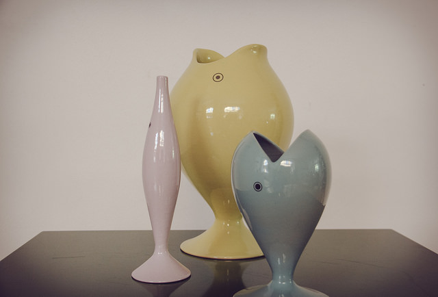
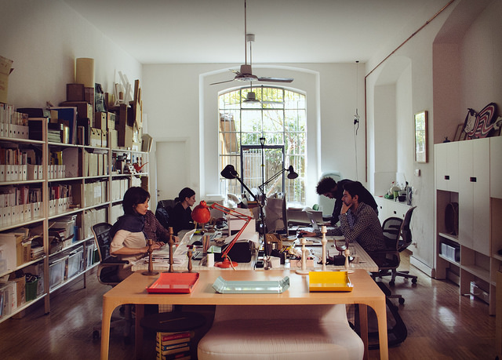
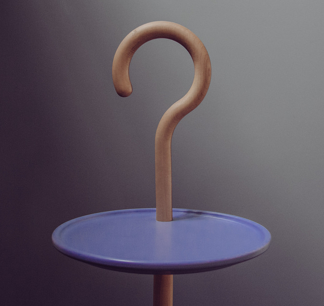

- Event Listeners

Giorgia Lupi
Giorgia Lupi is a founder and design director of Accurat, an information design agency based in Milan and New York. She currently resides in Brooklyn, NY where she does talks about design and data visualization. Featured in this interview are designers Alex Piacentini and Marco Bernardi who are based in the Milan office. Accurat specializes in creating and designing interactive and print-based analytical tools that provide a visual narrative, which aid user awareness, comprehension and engagement.
"What also helps is that we have such different approaches it also helps to tackle design problems and data visualizations from various angles, adding several perspectives."
-

Product Name
-

Product Name
-

Product Name
-

Product Name
“Design is what shapes our everyday experiences and relationship with the external world, our relationship with the objects that we use and the physical spaces we are in, everything.”

This interview was conducted by Scott Horsfall and Terrence Ma
Introduction
Immersive Print
Digital Opportunities
Different Backgrounds
Design is everything
0:00
/
0:00